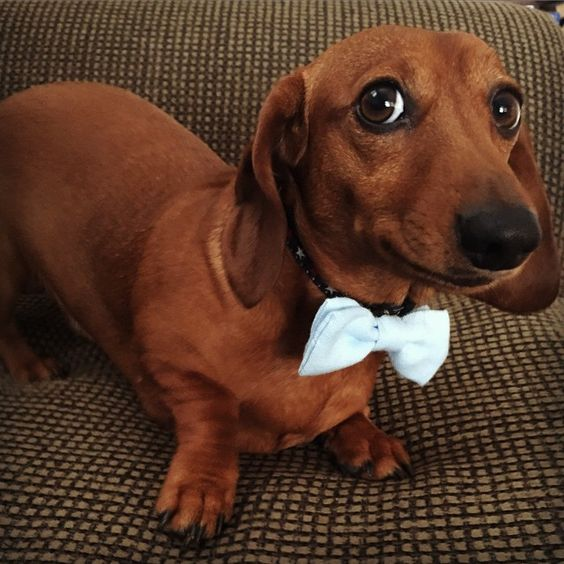

Welcome
Una mañana, tras un sueño intranquilo, Gregorio Samsa se despertó convertido en un monstruoso insecto. Estaba echado de espaldas sobre un duro caparazón y, al alzar la cabeza, vio su vientre convexo y oscuro, surcado por curvadas callosidades, sobre el que casi no se aguantaba la colcha, que estaba a punto de escurrirse hasta el suelo. Numerosas patas, penosamente delgadas en comparación con el grosor normal de sus piernas, se agitaban sin concierto. - ¿Qué me ha ocurrido? No estaba soñando. Su habitación, una habitación normal, aunque muy pequeña, tenía el aspecto habitual. Sobre la mesa había desparramado un muestrario de paños - Samsa era viajante de comercio-, y de la pared colgaba una estampa recientemente recortada de una revista ilustrada y puesta en un marco dorado. La estampa mostraba a una mujer tocada con un gorro de pieles, envuelta en una estola también de pieles, y que, muy erguida, esgrimía un amplio manguito, asimismo de piel, que ocultaba todo su antebrazo. Gregorio miró hacia la ventana; estaba nublado, y sobre el cinc del alféizar repiqueteaban las gotas de lluvia, lo que le hizo sentir una gran melancolía. «Bueno -pensó-; ¿y si siguiese durmiendo un rato y me olvidase de